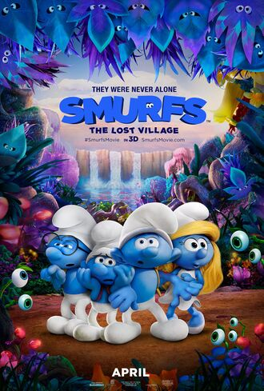

|  |
The Plot
The plot focuses on best friends Smurfette, Brainy, Clumsy and Hefty use a special map that guides them through the Forbidden Forest, an enchanted wonderland that's filled with magical creatures. Their adventure leads them on a course to discover the biggest secret in Smurf history as they race against time and the evil wizard Gargamel to find a mysterious village. Meanwhile, Papa Smurf discovered that four smurfs had gone to journey for Forbidden Forest after being grounded as they must find them before it’s too late.
Why It Rocks
- Several funny moments.
- Gargamel's pet vulture, Monty, made his animation debut.
- The ending was great, where Smurfette became the new leader of the Smurfs, and most of all, a true Smurf.
- Smurf Willow, Papa Smurf's former arch-rival and currently his future wife, and several female Smurfs are the series' new characters, that are introduced in this film.
- Gargamel still steals the show.
- Decent humor.
- The designs closely follow the artwork by the Smurfs' creator, Peyo.
Reception
Smurfs: The Lost Village receiving mixed reviews from critics. The film currently holds a 40% rating on Rotten Tomatoes based on 97 reviews, with the consensus reading
"Smurfs: The Lost Village satisfied young viewers and hardcore Smurfaholics."
- Garfield, The Cat
|